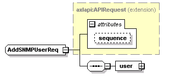
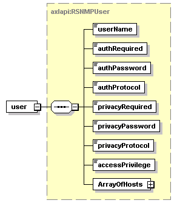

| diagram |  | ||||||||||||
| namespace | http://www.cisco.com/AXL/API/10.5 | ||||||||||||
| type | extension of axlapi:APIRequest | ||||||||||||
| properties |
|
||||||||||||
| children | user | ||||||||||||
| used by |
|
||||||||||||
| attributes |
|
||||||||||||
| source | <xsd:complexType name="AddSNMPUserReq"> <xsd:complexContent> <xsd:extension base="axlapi:APIRequest"> <xsd:sequence> <xsd:element name="user" type="axlapi:RSNMPUser" nillable="true"/> </xsd:sequence> </xsd:extension> </xsd:complexContent> </xsd:complexType> |
| diagram |  | ||||
| type | axlapi:RSNMPUser | ||||
| properties |
|
||||
| children | userName authRequired authPassword authProtocol privacyRequired privacyPassword privacyProtocol accessPrivilege ArrayOfHosts | ||||
| source | <xsd:element name="user" type="axlapi:RSNMPUser" nillable="true"/> |